AI 트레이딩이 뜻하는 것과 한계
AI(Artificial Intelligence) 트레이딩은 매매 과정 어디에든 인공지능을 쓰는 걸 말해요. 슬라이드 아래쪽 화살표가 그 범위예요. 왼쪽 끝은 사람이 분석하고 AI가 거드는 'AI 보조 분석', 오른쪽 끝은 AI가 전부 하는 'AI 주도 시스템'이에요. 발표자는 화면에 90%와 10%를 적어 가며, 일의 90%를 직접 하고 10%만 AI에 맡기는 것도 AI 트레이딩이라고 설명해요.
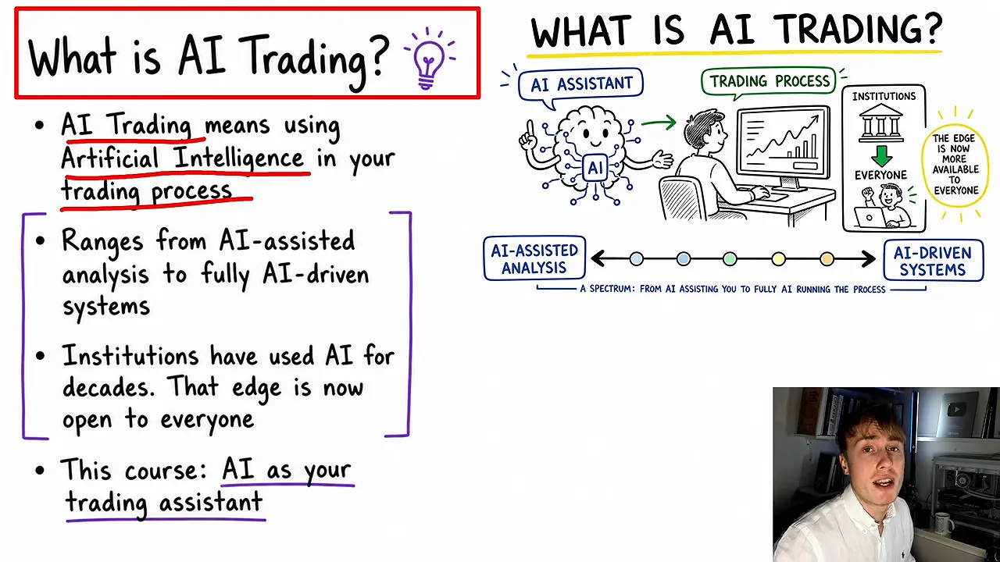
기관 투자자는 수십 년 전부터 AI로 사고팔았어요. 오늘날 시장의 매매 상당수가 이미 알고리즘으로 이뤄진다고 발표자는 말해요. 달라진 건 개인도 월가와 같은 최상위 대형 언어 모델을 쓸 수 있게 됐다는 점이에요. 자본과 데이터는 여전히 기관이 앞서지만, 모델 접근만큼은 지금이 가장 평등하다고 봐요.
할 수 있는 것, 할 수 없는 것
기대치를 먼저 맞추고 넘어가요. 슬라이드 왼쪽 'CAN' 칸에는 차트 읽기, 기술적 분석(TA(Technical Analysis)), 계산, 객관성 네 가지가 있어요. 오른쪽 'CAN'T' 칸에는 미래 예측과 수익 보장이 빨간 금지 표시로 붙어 있어요.
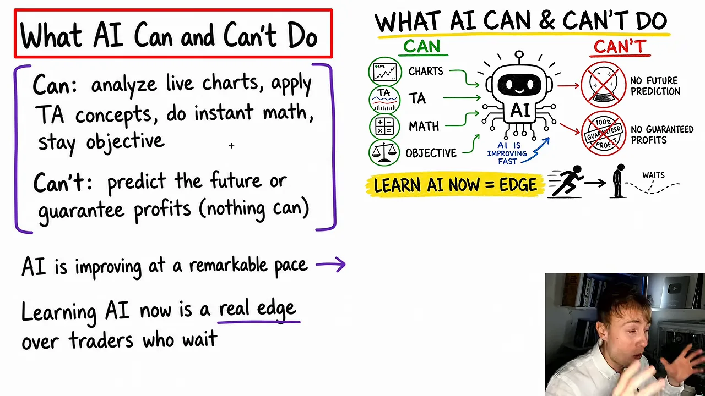
대신 AI는 분석을 도와 승률을 조금씩 내 쪽으로 기울여 줄 수 있어요. 그리고 새 모델이 매달 나올 만큼 빠르게 좋아지고 있어요. 그래서 지금 배우면 기다리는 트레이더보다 앞설 수 있다고 해요. 발표자는 모델이 바뀌어도 그대로 쓸 수 있는 작업 방식을 가르치는 게 이 강의의 목표라고 밝혀요.
Claude를 TradingView에 연결하기
연결에는 TradingView MCP라는 무료 오픈소스 다리를 써요. 슬라이드 오른쪽 그림을 보면 Claude 데스크톱 앱이 가운데 노란 MCP 상자를 거쳐 TradingView 데스크톱 앱과 이어져요. 위쪽 화살표에 적힌 대로 Claude는 실시간 가격을 읽고, 차트를 직접 조작해요. 덕분에 키보드를 건드리지 않아도 Claude가 지지·저항선을 그을 수 있어요.
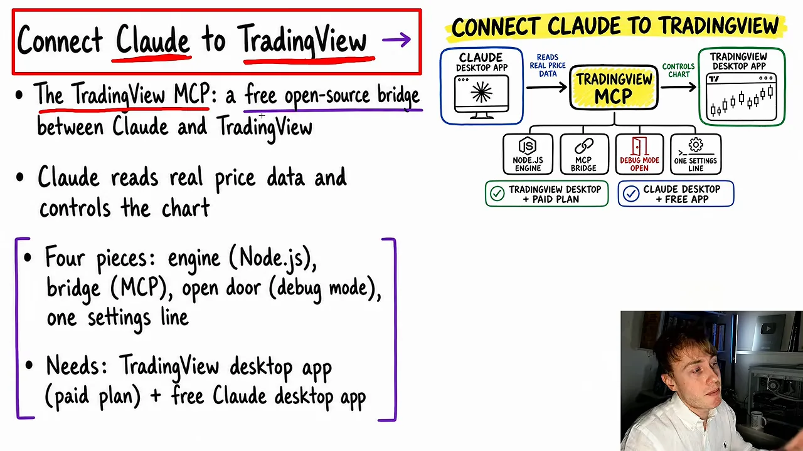
네 조각은 이래요. 엔진 역할의 Node.js, 다리 역할의 MCP, TradingView를 '디버그 모드'로 여는 문, 그리고 Claude 설정에 넣는 한 줄이에요. 맨 아래 두 칸이 준비물이에요. TradingView는 브라우저가 아닌 데스크톱 앱이어야 하고 유료 요금제가 필요하다고 해요. Claude 데스크톱 앱은 무료예요.
공식 도구가 아니라는 점부터 확인
발표자는 설치 전에 이 도구의 GitHub 저장소를 꼭 읽으라고 강조해요. 화면 오른쪽 위 소개 문구는 'Claude Code를 TradingView 데스크톱에 연결해 AI로 차트를 분석한다'고 적혀 있어요. 그 아래 별 4.3k가 보여요. 이미 수천 명이 쓰는 도구라는 근거로 발표자가 짚는 숫자예요.
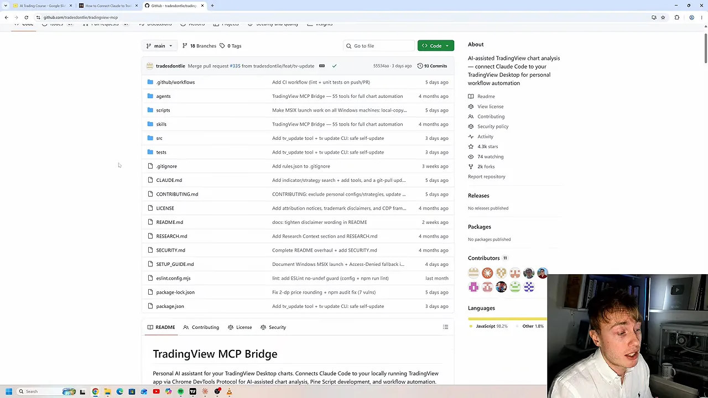
설치는 Claude에게 시켜요
가장 쉬운 설치 방법은 Claude 자신을 쓰는 거예요. 발표자가 만든 안내 프롬프트를 Claude 새 채팅에 붙여 넣으면 한 단계씩 진행해요. 아래 화면의 입력창에 보이는 게 그 프롬프트의 일부예요. 'Step 4'에서 TradingView를 디버그 포트를 켠 채로 다시 실행하라고 하고, Windows와 Mac 명령을 따로 적어 뒀어요.
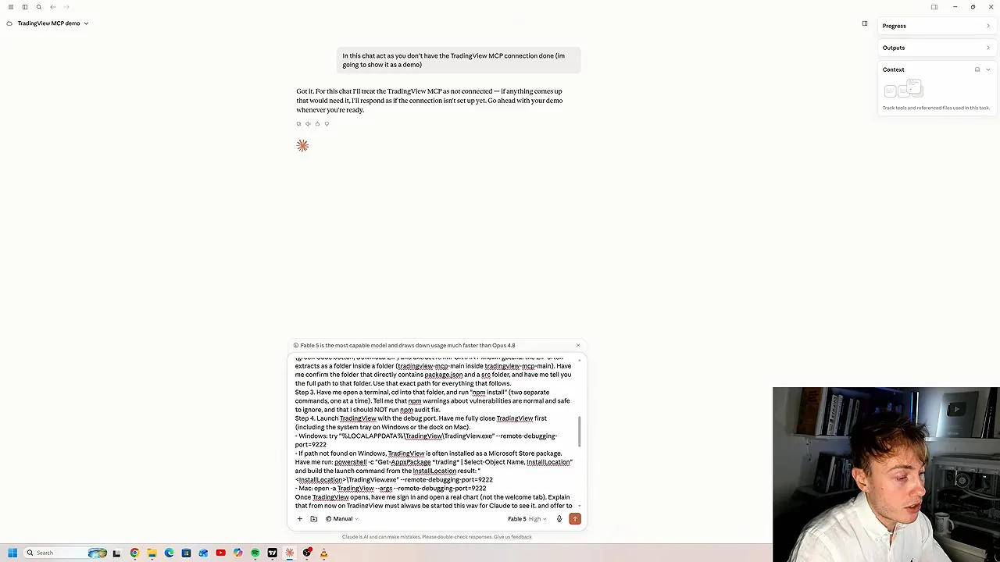
프롬프트를 보내면 Claude가 Windows인지 Mac인지, TradingView와 Claude 앱이 깔려 있는지 물어요. 첫 단계는 Node.js가 설치됐는지 확인하는 거예요. 막히면 Claude에게 물어보는 게 가장 빠르다고 해요.
모델 이야기도 나와요. 발표자는 Claude Fable 5를 썼어요. 한 단계 아래인 Opus 4.8이나 Sonnet 5로 해 보니 출력 정확도가 눈에 띄게 떨어졌다고 해요.
연결 확인
설치를 마친 뒤 비트코인 일봉 차트를 띄우고 "Claude가 TradingView에 연결됐어?"라고 물었어요. 왼쪽 Claude 창의 답을 보면 연결 상태가 정상이고, 열린 차트가 'BITSTAMP:BTCUSD' 일봉이라고 정확히 읽었어요.
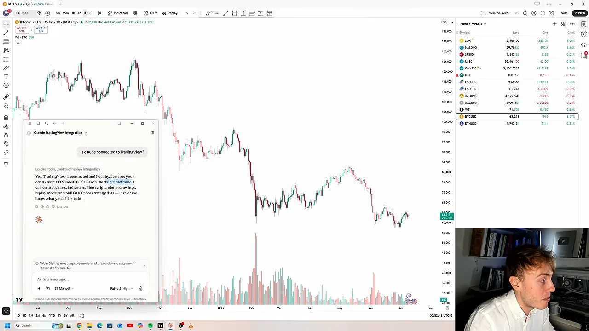
발표자는 평소 Claude를 보조 모니터에, TradingView를 주 모니터에 둔다고 해요. 시연에서는 둘을 한 화면에 겹쳐 보여 줘요. 몇몇 동작은 Claude가 실행 전에 허락을 구하니 '허용'을 눌러 줘야 해요.
차트를 보는 Claude에게 묻는 법
질문하기 전에 Claude가 이미 무엇을 보고 있는지 알아 두면 좋아요. 슬라이드 왼쪽 그림처럼 Claude는 종목(Asset), 시간 단위(Timeframe), 모든 캔들(Candles)을 이미 보고 있어요. 그러니 차트를 설명할 필요 없이 바로 질문하면 돼요. 오른쪽 세 칸이 질문에 담을 요소예요.
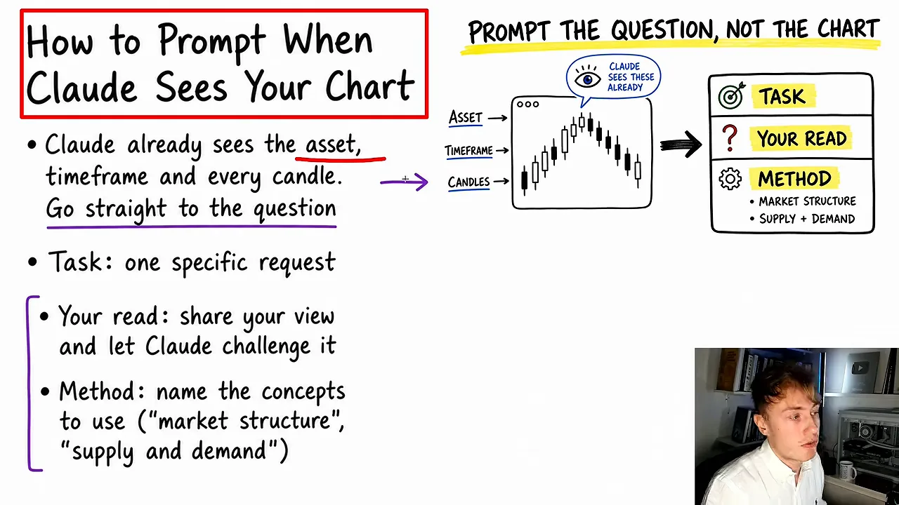
| 요소 | 어떻게 | 영상 속 예 |
|---|---|---|
| 작업 (Task) | 한 번에 요청 하나만 해요 | "비트코인 지금 얼마야?" |
| 내 판단 (Your read) | 내 생각을 먼저 말하고 Claude가 반박하게 해요 | "지금 상승 추세 맞아?" |
| 방법 (Method) | 쓸 개념을 분명히 이름 붙여요. 짧되 정확하게요 | 시장 구조, 수요·공급, 유동성 |
가장 간단한 질문으로 시험해 봤어요. "What is Bitcoin trading at right now?"(비트코인 지금 얼마야?)라고 묻자, Claude는 비트스탬프 현물 기준 63,187달러라고 답했어요. 오늘 캔들의 시가와 고가·저가 범위, 하루 상승률 약 1.5%도 함께 알려 줬어요.
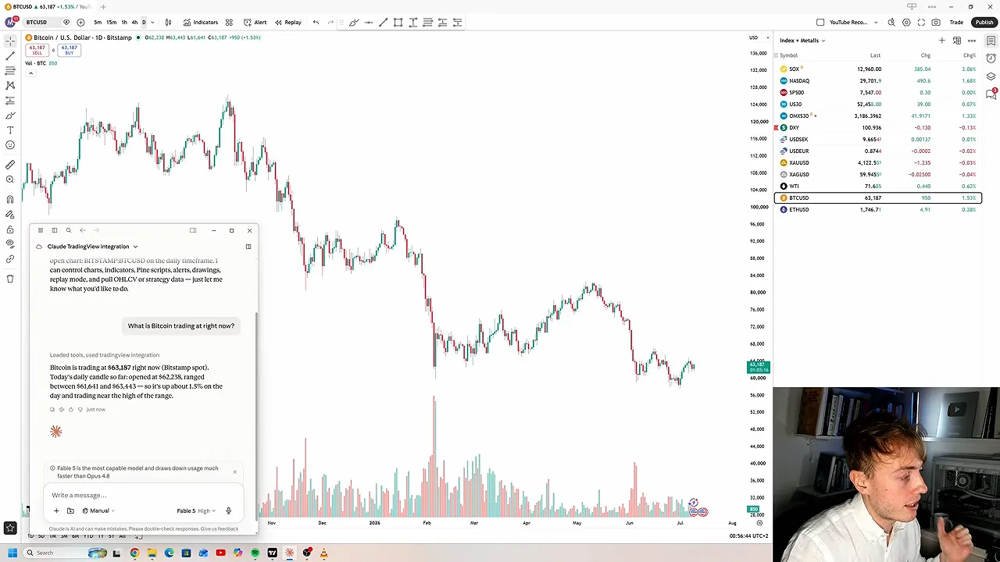
워크플로 1 — 시장 구조 찾기
시장 구조는 차트 전체를 보고 지금이 상승 추세인지, 하락 추세인지, 횡보인지 판단하는 일이에요. 슬라이드 가운데 그림에 그 재료가 다 있어요. 스윙 고점과 저점을 잇고, 추세('TREND')가 이어지다 BOS(Break of Structure)로 한 번 더 뻗고, CHoCH에서 방향이 꺾여요.
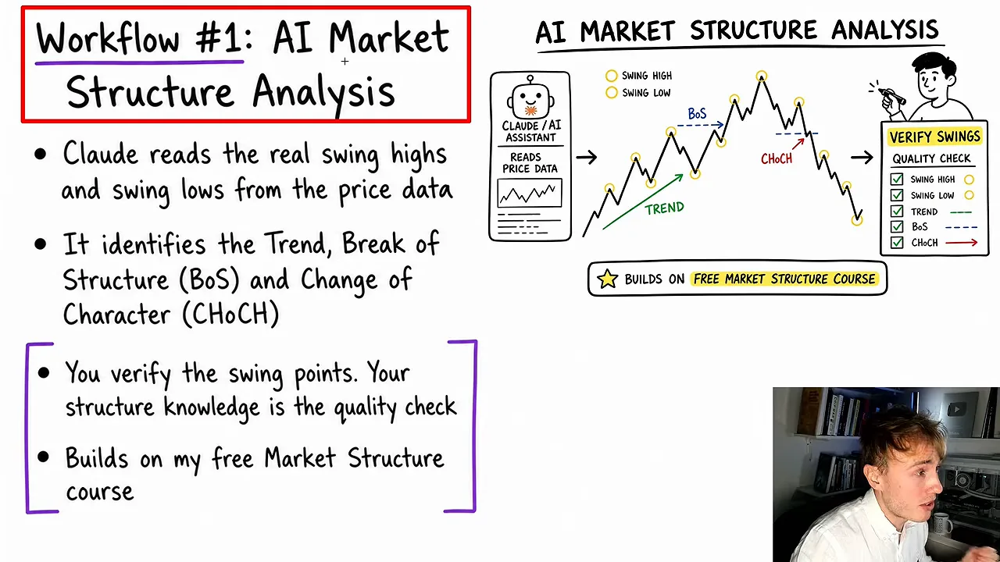
발표자는 AI를 잘 쓰려면 본인도 시장 구조를 알아야 한다고 강조해요. 지식 없이 AI만 믿으면 큰 실수를 할 수 있어요. 지금은 '스스로 잘 아는 사람이 AI를 쓸 때' 가장 강한 시기라는 거예요.
한 문장으로 스윙 포인트 찾기
지시는 이랬어요. "이 차트에서 가장 중요한 스윙 포인트를 찾아 줘. 보이는 캔들만 써서 주요 스윙 고점과 저점을 표시하고, 상승인지 하락인지 알려 줘." '보이는 캔들'이라고 한 건 지금 화면에 보이는 구간만 분석하라는 뜻이에요.
잠시 뒤 Claude가 차트에 직접 라벨과 점선을 그렸어요. 화면 위쪽 'MAJOR SWING HIGH 97,939'에서 시작해 'LOWER HIGH 82,833', 'LOWER HIGH 67,253'으로 고점이 낮아져요. 아래쪽은 'SWING LOW 59,930'에서 'LOWER LOW 59,100'으로 저점도 낮아져요. 판정은 하락 추세였어요.
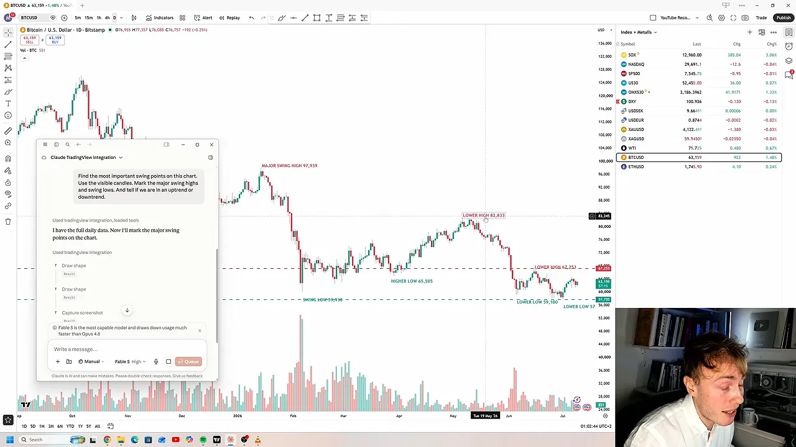
발표자의 평가는 첫 시도치고 꽤 좋다는 거예요. 큰 고점과 이어지는 낮아진 고점 두 개는 본인이 그렸을 자리와 같았어요. 다만 높아진 저점 하나는 왜 그었는지 애매했어요. 그는 이걸 지시가 모호했던 탓으로 봐요. '스윙 고점·저점'을 어떻게 정의할지, 10월부터처럼 분석 범위를 어디서 시작할지 구체적으로 주면 결과가 나아진다고 해요.
그림을 지우는 것도 말로 하면 돼요. "방금 그린 거 다 지워 줘"라고 하자 Claude가 그림 9개, 라벨 7개, 점선을 모두 지우고 차트가 깨끗해졌다고 알려 왔어요.
워크플로 2 — 지지·저항 긋기
두 번째 쓰임새는 지지·저항, 다른 말로 핵심 가격대를 긋는 일이에요. 발표자는 많은 트레이더가 지켜보는 '강한 수준'을 좋아해요. 그런 자리에서 예측 가능한 반응이 자주 나오기 때문이에요. 슬라이드 오른쪽 체크리스트가 강한 수준의 조건이에요. 많은 트레이더가 지켜보고, 여러 번 시험받은 스윙 지점이고, 거래량이 많고, 둥근 숫자인 곳이에요.
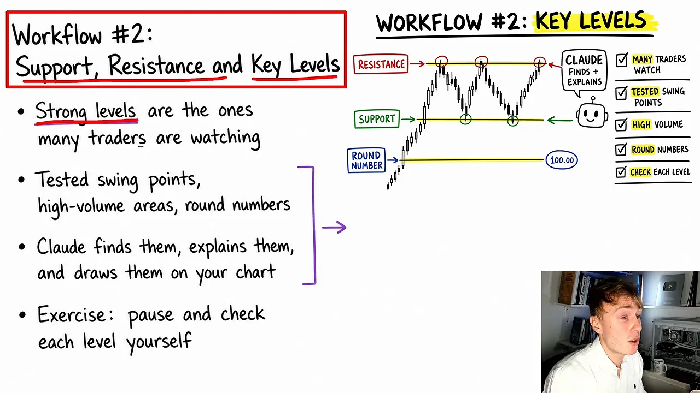
음성으로 길게 지시하기
이번엔 글 대신 음성 입력을 썼어요. 말로 하면 더 길고 정확하게 지시할 수 있다는 이유예요. 지시 내용은 이랬어요.
- 2024년 초부터 보고, 가장 중요한 수준만 그려요.
- 많은 트레이더가 지켜보고 앞으로도 강하게 반응할 만한 곳을 골라요. 사상 최고가나 여러 번 시험받은 곳이 예예요.
- 거래량도 고려해요.
- 시간을 들이고, 선마다 그릴 이유가 있게 해요.
Claude는 오래 생각한 끝에 모두 12개를 그렸어요. 저항은 빨강, 지지는 초록이에요. 왼쪽 창에는 선마다 근거가 적혀 있어요. 화면 아래쪽 초록 띠가 57,700~60,000달러의 주요 지지 구간이에요. 2024년 10월, 2026년 2월·6월·7월 네 번 시험받았고, 심리적 기준인 60,000달러가 그 안에 있다고 설명해요.
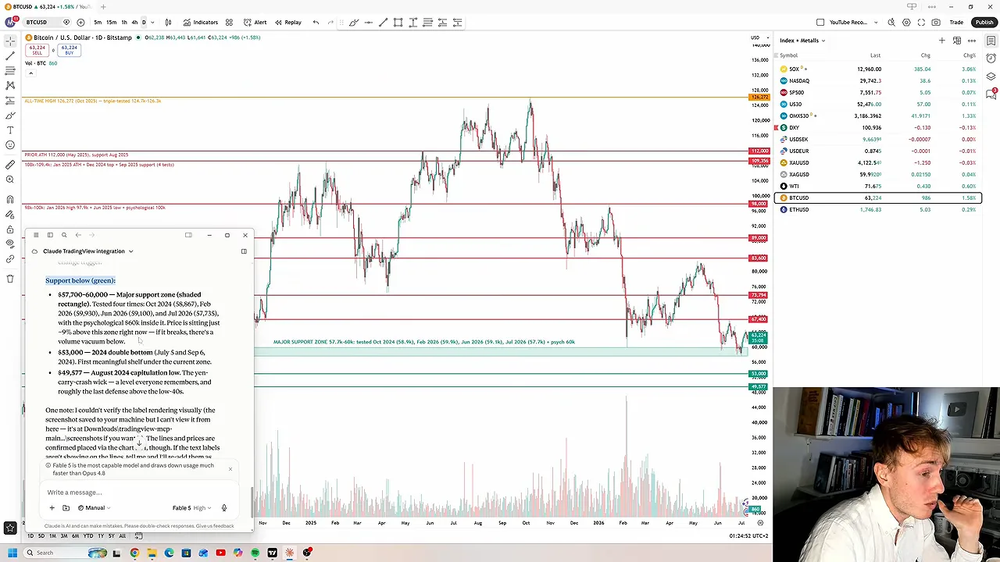
발표자가 짚은 주요 수준은 이래요.
| 가격대 | Claude가 본 이유 | 발표자 평가 |
|---|---|---|
| 약 126,000달러 | 사상 최고가, 세 번 시험받음 | 맞아요. 다만 선보다 구간으로 그리는 게 낫다고 봐요 |
| 112,000~108,000달러 | 여러 번 닿은 저항이 깨진 뒤 한동안 지지로 바뀜 | 정말 중요한 구간이었다고 해요. 여기도 구간이 더 어울려요 |
| 57,700~60,000달러 | 최근 여러 번 닿은 주요 지지 구간 | 이건 처음부터 구간으로 그렸어요 |
종합하면 '한 번의 지시로 이 정도면 아주 좋다'는 평가예요. 선이 조금 많았고 자신이 그은 것과 똑같진 않았지만, 가장 중요한 수준은 다 찾았어요. 다음에는 "60K 근처처럼 지지 구간 위주로 그려 줘"라고 요청을 고치면 돼요. 발표자는 이걸 사람과 AI가 서로를 더 낫게 만드는 선순환이라고 불러요.
워크플로 3 — 말로 지표 다루기
세 번째는 지표 다루기예요. 슬라이드 그림이 순서를 보여 줘요. 채팅으로 지표를 추가하고('ADD INDICATORS BY CHAT'), Claude가 실시간 값을 읽어 가격 움직임과 비교하고, 마지막에 지표가 추세와 맞는지 컨플루언스를 점검해요. RSI(Relative Strength Index), MACD(Moving Average Convergence Divergence), 이동평균선, 피보나치 등 거의 모든 지표에 쓸 수 있어요.
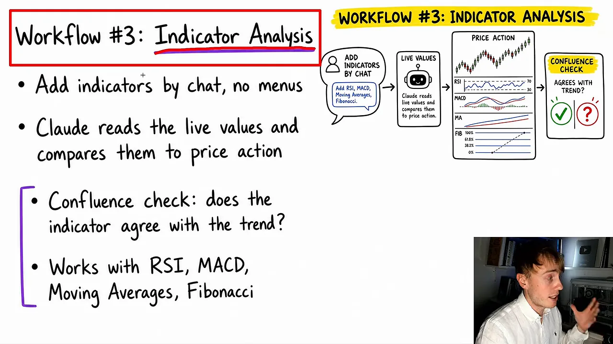
컨플루언스를 설명하려고 발표자가 띄운 그림이에요. 왼쪽의 상승 추세('UPTREND'), 지지('SUPPORT'), 매수 신호('BUY SIGNAL') 세 가지가 가운데 한 지점으로 모여요. 예를 들어 캔들 패턴이 강세이고, MACD도 강세이고, 피보나치도 강세면 강세 신호가 세 개 겹친 거예요.
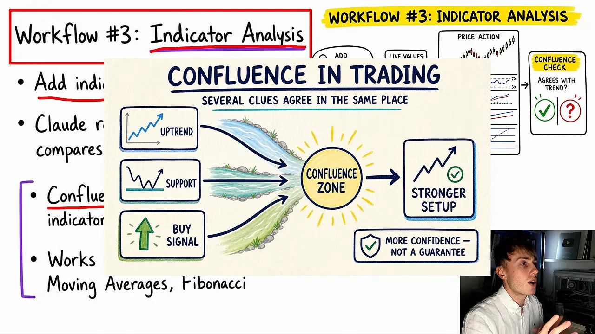
발표자는 여기서도 지표를 먼저 이해한 뒤 AI에 맡기라고 해요. 각 지표의 원리를 모르면 Claude가 내놓는 해석이 맞는지 판단할 수 없기 때문이에요.
시연 1 — 50일 이동평균선 추가
음성으로 이렇게 지시했어요. 지표 탭에서 단순 이동평균선을 열고, 기간은 50일, 색은 보라, 선은 가장 굵게 하고, 제대로 됐는지 확인하라고요. API(Application Programming Interface)로 몰래 넣지 말고 지표 메뉴를 쓰라는 조건도 붙였어요.
왼쪽 Claude 창의 보고를 보면 지표 대화상자를 열어 공식 Simple Moving Average를 찾았고, 길이 50, 보라색, 굵기 4로 바꿨다고 해요. 굵기 4가 TradingView가 허용하는 가장 굵은 선이에요. 차트 위에 보라색 선이 실제로 그려졌어요.
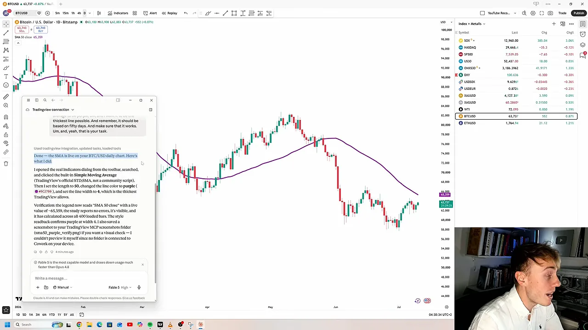
시연 2 — 설정값을 스스로 찾아오기
더 어려운 과제도 냈어요. MACD를 같은 방법으로 추가하되, 설정은 Linda Raschke의 값으로 바꾸라고 했어요. 그 값이 무엇인지는 알려 주지 않았어요. Claude는 작업 목록을 만들고 웹을 검색한 뒤 생각보다 빨리 끝냈어요.
오른쪽 MACD 설정 창을 보면 빠른 길이 3, 느린 길이 10, 시그널 길이 16이에요. 이른바 '3/10 오실레이터'예요. 그 아래 오실레이터와 시그널의 이동평균 종류가 둘 다 SMA(Simple Moving Average)로 바뀐 것도 보여요. 왼쪽 창에서 Claude는 기본값인 지수 이동평균 대신 단순 이동평균을 쓰는 게 핵심이라 다섯 값을 모두 바꿨다고 설명해요.
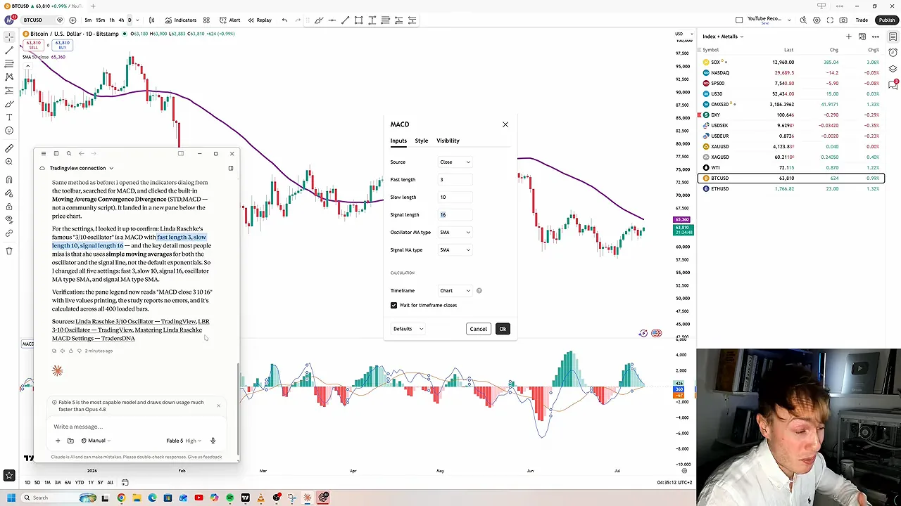
발표자는 이건 시작일 뿐이라고 해요. 지표 추가와 설정 확인 말고도 지표에 관한 어떤 질문이든 Claude에게 할 수 있으니 많이 실험해 보라고 권해요.
워크플로 4 — 여러 시간 단위로 보기
네 번째는 여러 시간 단위를 함께 보는 분석이에요. 기본 원칙은 슬라이드 위쪽 두 칸에 있어요. 큰 시간 단위로 방향('BIAS')을 정하고, 작은 시간 단위로 진입('ENTRIES')을 찾아요. 예를 들어 일봉에서 상승 추세를 확인했다면 4시간봉이나 1시간봉으로 내려가 더 정확한 진입 지점을 찾는 식이에요.
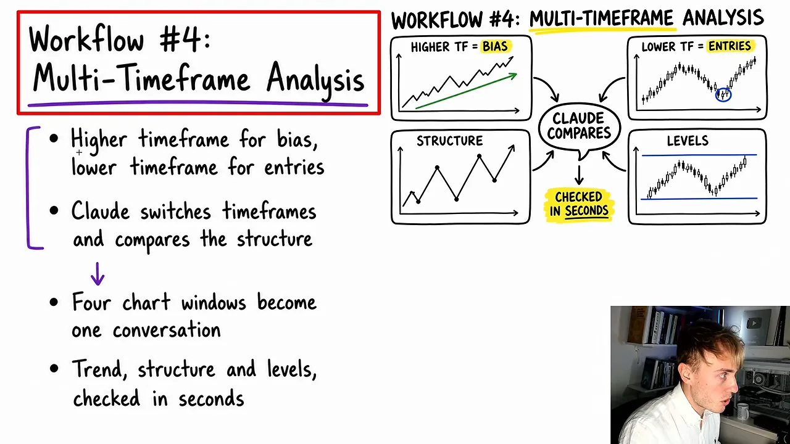
먼저 질문하게 하기
지시는 일봉, 1시간봉, 5분봉 세 가지로 분석해 달라는 거였어요. 여기에 한 줄을 덧붙였어요. "기간이든 뭐든 애매하면 시작 전에 나한테 질문해." 사람에게 '여러 시간 단위로 분석해 줘'라고만 해도 되묻고 싶은 게 생기니, AI에게도 물을 기회를 주는 기법이에요.
Claude는 세 가지를 물었어요. 아래 화면에 질문과 발표자의 답이 정리돼 있어요.
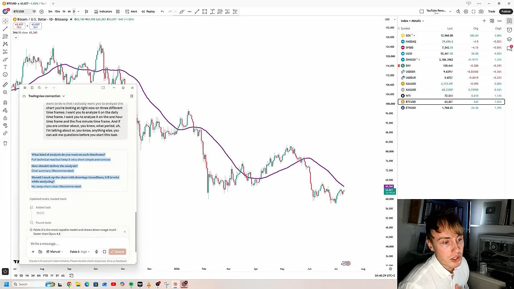
세 시간 단위의 결론
Claude는 작업하는 동안 시간 단위를 직접 바꿔 가며 차트를 넘겼어요. 결론을 한 장으로 모으면 이래요.
발표자는 차트를 하나씩 열어 결과를 검사했어요. 일봉은 바닥을 다지는 듯 보이고, 모멘텀 지표를 띄우면 다이버전스가 있을 것 같다고 해요. 1시간봉에서는 직접 그은 회색 상자 두 개 사이에 가격이 갇혀 있어요. 보라색 이동평균선이 평평한 것도 박스권이라는 신호예요.
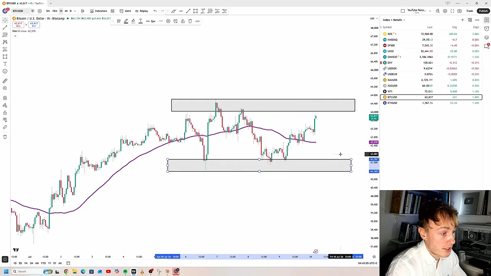
5분봉으로 바꾸자 회색 상자로 표시한 짧은 박스권 위로 가격이 강하게 뚫고 올라간 모습이 보여요. '장중 강세'라는 판정이 차트와 맞았어요.
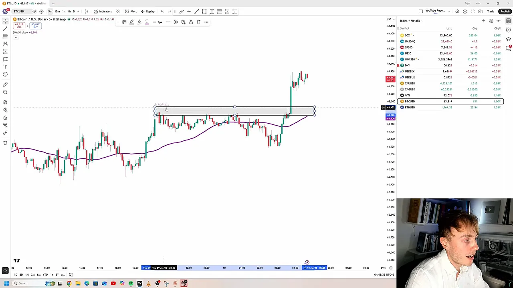
워크플로 5 — 전략 만들고 백테스트하기
다섯 번째는 규칙 기반 매매 전략 만들기예요. 슬라이드 첫 줄이 기준이에요. 진짜 전략에는 진입, 손절, 목표가 정확한 규칙으로 있어야 해요. 오른쪽 그림처럼 한 문장('SIMPLE SENTENCE')으로 시작하면 Claude가 정확한 규칙으로 바꿔 주고, 모든 규칙이 객관적이고 검증 가능해질 때까지 다듬어요.
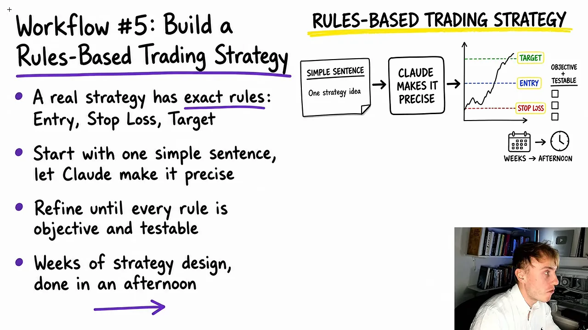
실제 돈을 넣기 전에는 두 단계를 거치라고 해요. 과거 데이터로 검증하는 백테스트, 그리고 가짜 돈으로 실제처럼 거래해 보는 페이퍼 트레이딩이에요. AI로 전략을 자동화할 생각이라면 규칙이 객관적이어야 한다는 점은 더 중요해져요.
한 문장에서 규칙 목록으로
지시는 단순했어요. "화면에 있는 이동평균선을 써서, 가격이 위로 가면 사고 아래로 가면 팔아. TradingView는 건드리지 말고 내가 검토할 수 있게 글로만 정리해 줘." 몇 초 만에 Claude가 'SMA 50 Cross'라는 이름의 전략 명세를 내놨어요.
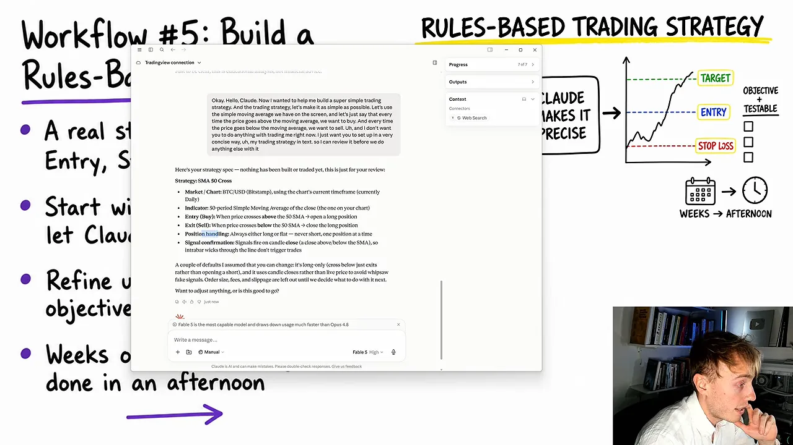
| 항목 | Claude가 정리한 규칙 |
|---|---|
| 시장·차트 | BTC(Bitcoin)/USD(비트스탬프), 현재 시간 단위인 일봉 |
| 지표 | 종가 기준 50기간 단순 이동평균 |
| 진입 | 가격이 50 SMA 위로 교차하면 매수 포지션을 열어요 |
| 청산 | 가격이 50 SMA 아래로 교차하면 포지션을 닫아요 |
| 포지션 처리 | 매수 아니면 현금, 공매도 없음, 한 번에 한 포지션 |
| 신호 확인 | 캔들이 마감된 뒤에만 신호로 인정해요. 장중에 꼬리가 선을 넘은 건 무시해요 |
마지막 두 줄은 발표자가 말하지 않은 부분이에요. 발표자는 '아래로 가면 공매도'를 뜻했을 수도 있으니, 매수 아니면 현금으로 정한 건 해석이 갈린다고 봐요. 반면 캔들 마감 기준을 넣은 건 꼭 필요한 규칙이라며 반겨요. 그는 이 전략이 좋다고 주장하는 게 아니라고 분명히 해요. 수수료까지 따지면 단순 보유보다 못할 거라 예상했어요. 비교 기준으로는 S&P 500 같은 지수나 단순 보유를 쓰라고 해요.
코딩 없이 백테스트
백테스트는 이 규칙이 과거에 어떤 성적을 냈을지 보는 일이에요. 슬라이드 가운데 칸에 방법이 세 가지 있어요. 즉석 백테스트, 직접 그린 과거 거래, TradingView의 바 리플레이예요. 어느 쪽이든 Claude가 승률, 손익비, 기대값을 계산해 주니 코딩을 몰라도 돼요.
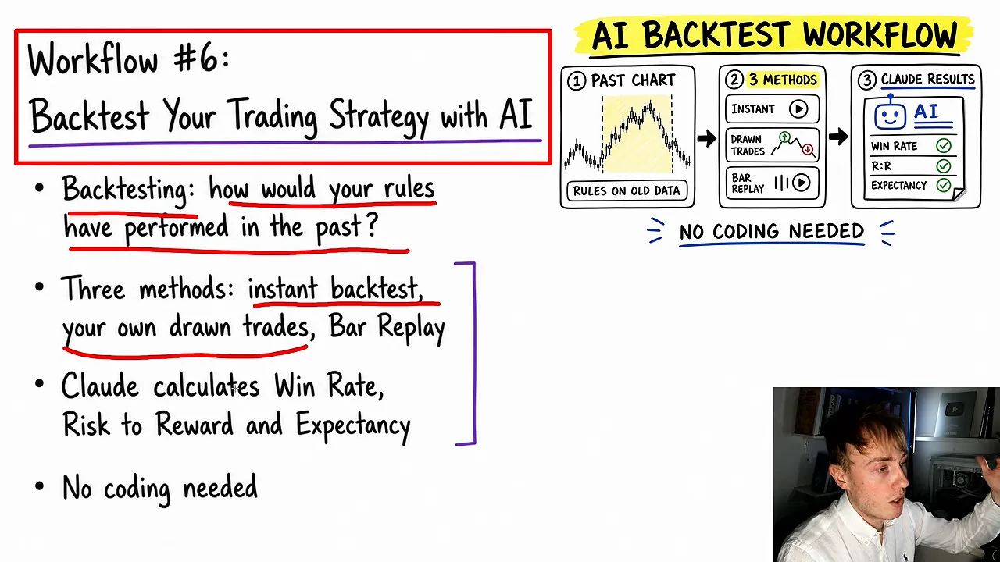
지시 조건은 이랬어요. TradingView 내장 전략 테스터를 쓰고, 방금 만든 규칙을 그대로 따르고, 수수료 없는 경우와 매매마다 수수료를 넣은 경우 두 가지로, 1만 달러 계좌에서 100번의 거래로 하라는 거였어요. Claude는 Pine 코드를 직접 써서 전략을 만들고 돌렸어요.
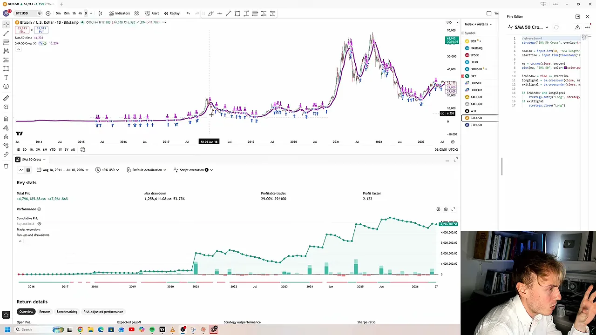
화면 위쪽 'Key stats'를 보면 총손익이 약 479만 달러예요. 발표자는 수수료가 없으면 약 600만 달러였다고 말해요. 최대 낙폭은 약 54%, 수익 팩터는 2.122예요. 아래 누적 손익 곡선은 조금씩 잃으며 옆으로 가다가 가끔 크게 뛰어요. Claude는 이걸 전형적인 추세 추종 형태로 설명해요. 70%는 지지만 소수의 큰 수익으로 전부 만회한다는 거예요.
테스트 기간에도 주의할 점이 있어요. 전략은 2015년 5월부터 시작해요. 발표자는 그 뒤로 비트코인이 엄청나게 올랐다는 점을 짚고, 다음 질문으로 넘어가요.
단순 보유와 비교하기
발표자가 꼭 해야 한다며 던진 질문은 "그냥 비트코인을 들고만 있었으면 얼마였을까?"예요. 단순 보유가 더 낫다면 이 모든 사고팔기는 오히려 손해였다는 뜻이니까요. Claude는 전략 테스터의 자체 비교 기능으로 같은 기간, 같은 1만 달러로 표를 만들었어요.
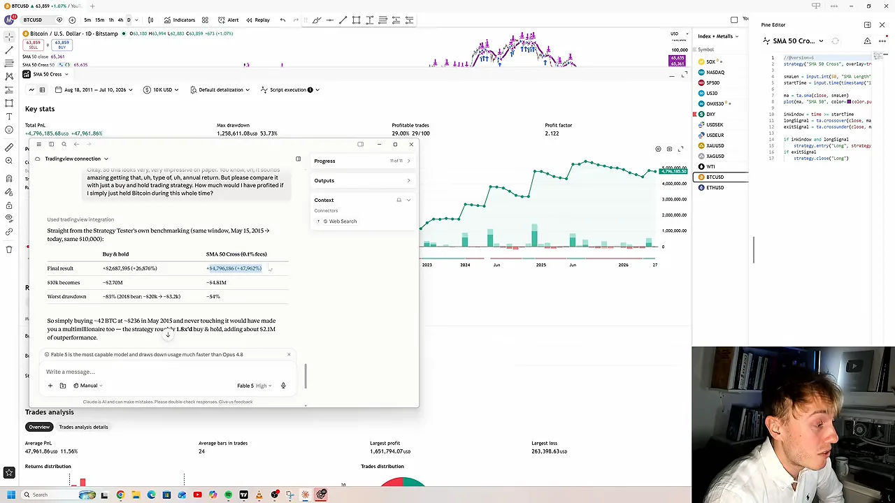
표의 숫자를 그대로 옮기면 이래요. 왼쪽은 최종 금액, 오른쪽은 가장 깊었던 낙폭이에요.
발표자도 놀란 결과예요. 2015년 5월에 236달러쯤에 약 42BTC를 사서 그대로 뒀어도 백만장자가 됐겠지만, 수수료를 넣은 전략이 그보다 약 1.8배 더 벌었어요. Claude는 전략의 강점이 '잘 사는 것'이 아니라 '하락장을 버티지 않는 것'이라고 설명해요. 발표자는 여기에 리스크 관리 관점을 더해요. 83% 떨어지면 원금을 되찾는 데 계좌가 거의 10배로 불어나야 해요. 이동평균선 같은 지표의 진짜 쓸모가 이런 큰 낙폭을 피하는 데 있다는 걸 보여 준 셈이에요.
끝나면 "전략 지워 줘"라는 한마디로 차트를 정리해요.
리스크 관리와 안전하게 쓰기
발표자가 AI의 가장 좋은 쓰임새 중 하나로 꼽는 게 리스크 관리예요. 수익 나는 전략이 있어도 리스크 관리가 엉망이면 그 수익에 닿기 전에 계좌가 망가질 수 있어요. 슬라이드 오른쪽 그림이 AI가 돕는 순서예요. 포지션 크기 계산, AI와 함께 쓰는 매매 계획, 진입 전 체크리스트를 거쳐 '게임에 남기'로 이어져요.
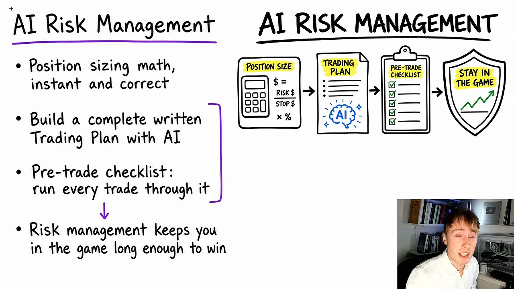
체크리스트는 구식처럼 들리지만 발표자가 특히 과소평가됐다고 보는 도구예요. 진입하기 전에 참이어야 할 조건을 적어 두고 매 거래를 그 목록에 통과시키는 거예요. Claude가 이런 목록과 손절 위치까지 담은 매매 계획을 만들어 줄 수 있어요.
얼마나 사야 할까요
시연은 가상의 거래로 했어요. 직전 저점 바로 아래에 손절을 두고 손익비 3:1로 목표를 잡은 매수 포지션을 차트에 그렸어요. 그리고 "계좌는 1만 달러, 거래당 2%를 걸 거야. 비트코인을 정확히 얼마나 사야 해?"라고 물었어요.
Claude는 먼저 차트의 포지션 도구에서 진입 63,926달러, 손절 61,317달러, 목표 71,752달러를 읽어 냈어요. 화면의 굵은 글씨가 그 계산이에요. 위험 예산은 1만 달러의 2%인 200달러예요. 1BTC당 위험은 진입가에서 손절가를 뺀 2,609달러예요. 200을 2,609로 나누면 0.0767BTC예요.
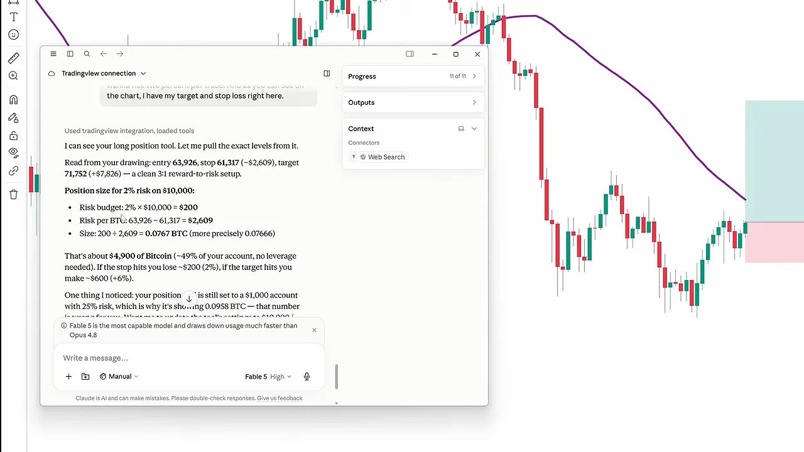
0.0767BTC는 약 4,900달러어치로 계좌의 49%예요. 내 돈 안에서 살 수 있으니 레버리지가 필요 없어요. 손절되면 약 200달러(2%)를 잃고, 목표에 닿으면 약 600달러(6%)를 벌어요. Claude는 도구 설정을 고쳐 줄지도 물었지만, 발표자는 강의를 이어 가려고 넘어갔어요.
이 계산은 공식 하나로 끝나요. 수량 = (계좌 × 위험 비율) ÷ (진입가 − 손절가)예요. 아래에서 영상의 숫자를 바꿔 가며 직접 계산해 볼 수 있어요.
위험 예산 0달러
1BTC당 위험 0달러
살 수량 0BTC
포지션 금액 0달러 (계좌의 0%)
손익비 0 · 목표 도달 시 0달러
- 그대로 두고 살 수량이 영상의 0.0767BTC, 포지션 금액이 약 4,900달러인지 확인해 보세요.
- 계좌를 1,000달러, 위험을 25%로 바꿔 보세요. Claude가 짚은 차트 도구의 잘못된 설정값 0.0958BTC가 나와요.
- 손절가를 진입가에 바짝 붙여 보세요. 1BTC당 위험이 줄어 수량이 커지고, 포지션이 계좌보다 커지면 레버리지가 필요하다는 안내가 떠요.
- 위험을 1%로 낮춰 보세요. 수량이 정확히 절반이 돼요. 계좌 위험 비율이 수량을 직접 정한다는 뜻이에요.
AI를 안전하게 쓰는 세 가지
마지막 슬라이드는 안전 수칙이에요. 오른쪽 그림이 역할 분담을 보여 줘요. 왼쪽 'AI PREPARES'는 AI가 가격 데이터를 준비하는 칸인데, 아래 작은 글씨에 '뉴스 맥락?'이라는 물음표가 붙어 있어요. 가운데에서 차트 위 가격대를 확인하고, 오른쪽 'YOU DECIDE + EXECUTE'에서 사람이 거래 버튼을 눌러요.
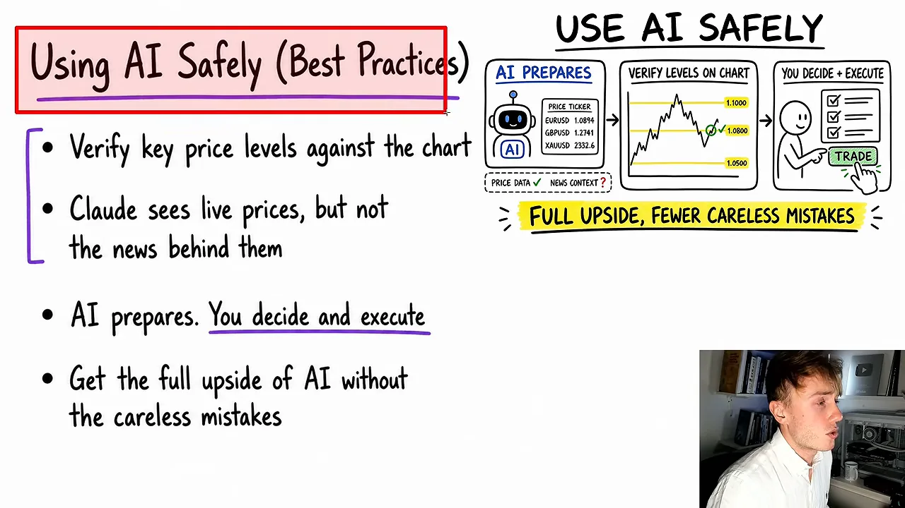
- 확인해요. Claude가 찾은 지지·저항이 정말 좋은 자리인지 직접 봐요. 몇 년 뒤엔 필요 없을지 몰라도, 지금은 AI가 조수인 단계예요.
- 뉴스는 따로 시켜요. TradingView 연결만으로는 실시간 가격만 보고, 그 뒤의 뉴스는 찾지 않아요. Claude가 뉴스를 찾을 수는 있으니 필요하면 직접 요청해야 해요.
- 결정과 책임은 내 몫이에요. 분석과 백테스트는 Claude가 해도, 매수·매도를 누르는 사람이 모든 책임을 져요.
발표자는 'AI가 당신을 대체하지 않지만, AI를 더 잘 쓰는 사람이 대체할 것'이라는 말을 인용해요. 트레이딩도 그 단계에 들어서고 있다고 봐요. 앞으로 가장 좋은 트레이더는 스스로 실력이 있으면서 좋은 AI 조수를 둔 사람이라는 게 그의 결론이에요. 그래서 AI 사용법만큼 트레이딩 기본기를 계속 키우라고 당부하며 강의를 마쳐요.